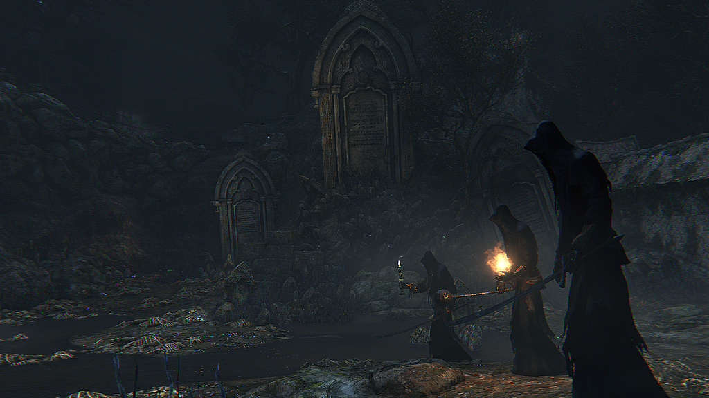
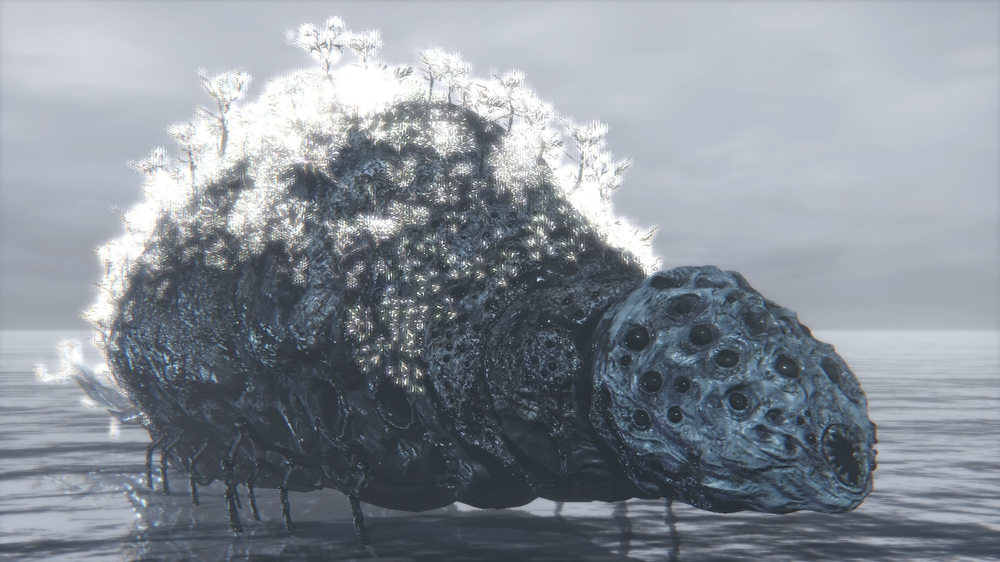
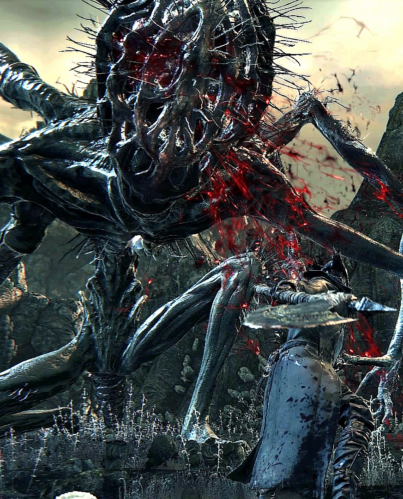
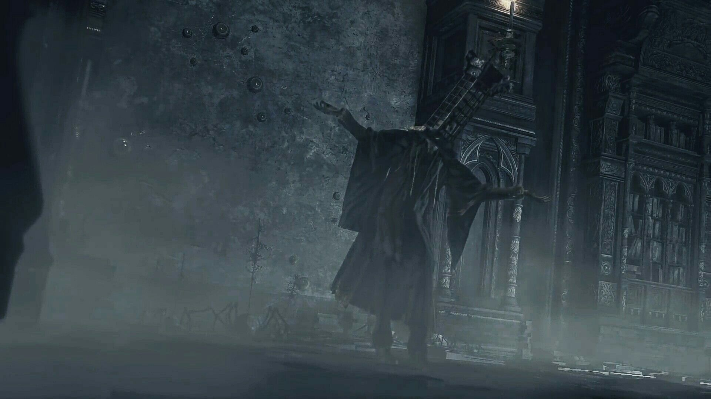
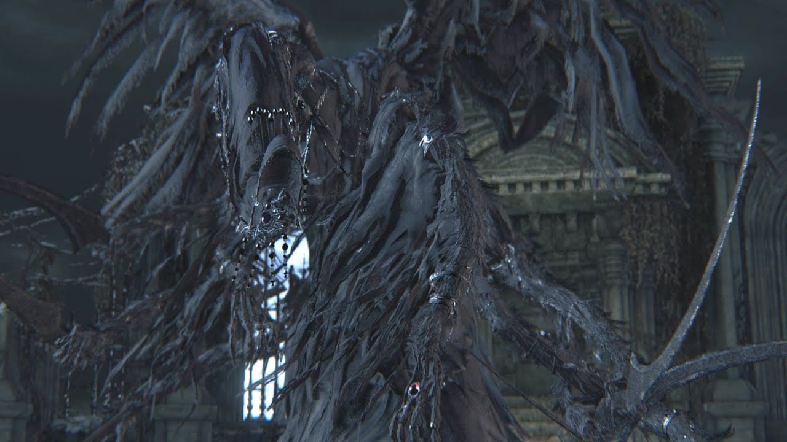
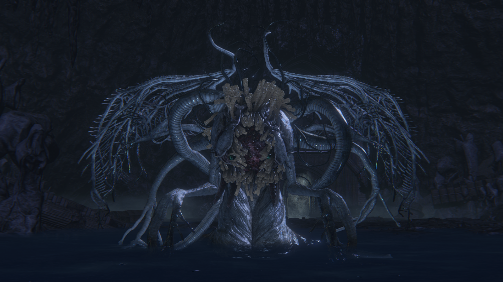
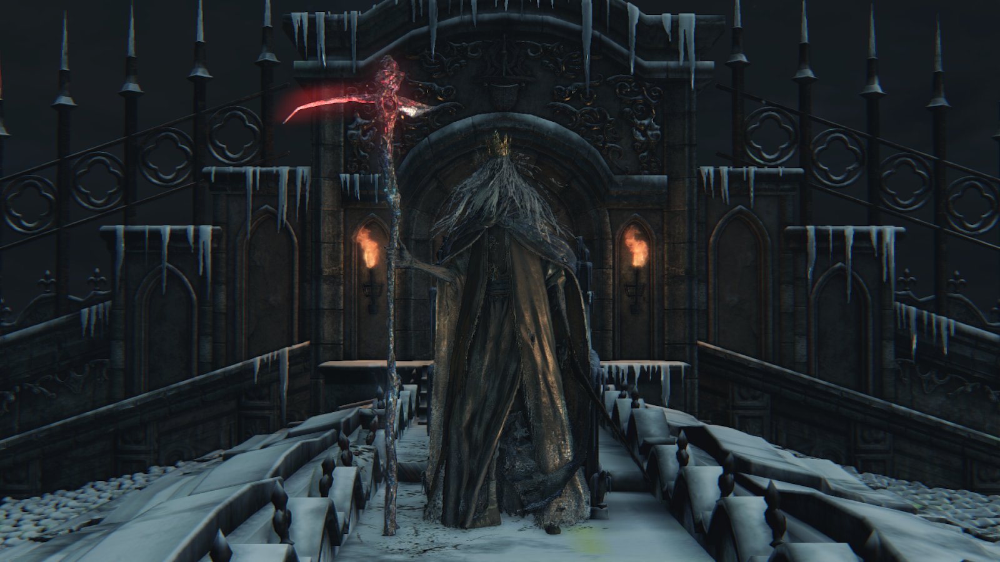
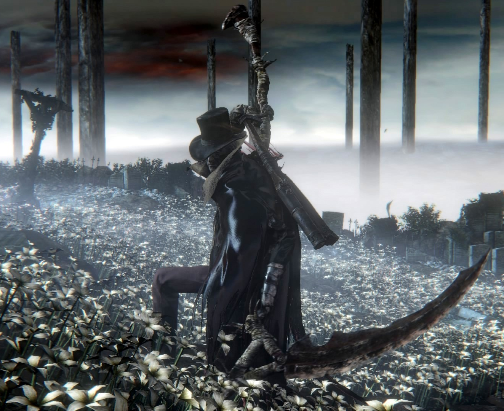

Bosses are strong and dangerous enemies in Bloodbore, each with its own individual tactics.
Unlike other common opponents, they have sceen life bar and a name.
Bosses are not revived, and after their deaths, and you also can express some changes in the game world.

The Cleric Beast is an enormous creature with disfigured horns. With high agility and superhuman strength, this boss should not be taken lightly. This creature owes its name to a rumor which states that members of the Healing Church would eventually transform into the most hideous beasts.

Father Gascoigne is an experienced hunter who has succumbed to the blood-drunkenness of the hunt and, as such, descended into a frenzied killing spree. He is armed with the Hunter Axe and a modified version of the Hunter Pistol that acts like the Hunter Blunderbuss, and he also wears his titular Gascoigne's Set. Despite his title, he is not a Healing Church priest. This is referenced in his attire's description.

The Blood-starved Beast is a deformed, quadrupedal creature whose skin is peeled off and hanging from its back. Much like the Cleric Beast, it also has a malnourished, skeletal appearance. However, unlike the latter, the Blood-starved Beast fought as a boss is so malnourished and devoid of blood that it instead bleeds poison. Although it may look like a weak creature at first sight, its erratic and nimble movements make it a formidable foe for hunters. The Blood-starved Beast is generally the third or fourth boss of the game depending on how the player explores the Cathedral Ward.

Vicar Amelia is a high-ranking member of the Healing Church, the successor of Laurence, and to whom his Gold Pendant has been passed down. In stark contrast with the Beast Patients, people that slowly turn into monsters under layers of bandages, this woman shows perfectly what happens when a human mutates suddenly into a full-fledged Beast: at first Amelia is seen as a normal female priest with tattered white robes, kneeling and reciting a prayer, but after a few instants she changes abruptly. Her skin ruptures under the force of her new body, splattering blood all around: now another kind of Cleric Beast, her ash blonde hair has become a long wild mane while her face, covered by scraps of her clothes like the rest of her body, has turned into a lupine head with thin antlers and a slasher smile of sharp teeth. Even if she appears less bulky and almost skeletal compared to both male Cleric Beasts, she is far from weak and frail: her hands' talons, which she can extend like a cat, are sharp and so hard that they emit sparks while grinding on stone. Her scrawny arms are powerful as well, being able to create a strong shockwave by smashing them to the floor. Even the same Gold Pendant that she still clutches proves to be more than a simple locket: Amelia is able to use it to channel energy in order to start healing her wounds in a pillar of golden light, thus making it some sort of Hunter Tool. As a "True" Beast she will take extra damage from Serration.

The Witch of Hemwick is visually an elderly hunched woman, with clothes that are covered head to toe in extracted human eyes. She is essentially an Eye Collector that has acquired enough eyes to be able to perform acts of Arcane magic. Specifically what appears to be blood Arcane spells, similar to the Brainsucker, but colored red, and the ability to become invisible. However, what makes her dangerous is her ability to spawn up to three Mad Ones at any time.
The Shadow of Yharnam consists of three figures shrouded in black robes. As the fight progresses they are revealed to have been infected with the parasitic snakes that infest the woods and undergo gruesome mutations. They share a symbiotic link with the vipers, either transforming their arms to use them as whips or summoning gigantic serpents to devour victims. This fight involves three enemies, all of which are vulnerable to Bolt-type attacks. Shadow #1: Uses a mace and casts long-range, semi-homing fireballs. Shadow #2: Wields a large scimitar and a candlestick that acts as a flamethrower. Shadow #3: Uses only a large scimitar, but is the most aggressive of the three. They are servants of Queen Yharnam, as their name implies. However, unlike other Shadows, they have infested with the parasytic snakes found inside the Forbidden Woods, making them a tough challenge when compared with the other Shadows.
Despite her title, Rom resembles a gigantic pillbug rather than an arachnid. She has a silverfish-like tail and a bulbous body from which vegetation appears to be growing, possibly Coldblood Flowers. Her face resembles a chunk of pumice and is covered in eyes, suggesting its connection to the Great Ones. Rom is initially non-hostile until provoked, at which point will use powerful magic attacks to defend herself. Rom is accompanied by creatures known as the Children of Rom. They resemble actual spiders, but with the same shaped head and appear to have blades for legs. These spiders are possibly either the literal spawn of Rom or were created in order to defend the creature.

Born from an unholy Pthumerian ritual which used the bodies of Yharnam's populace, The One Reborn is an amalgamate of grotesque misshapen and decayed body parts assembled to form one massive unliving creature. It has a singular giant humanoid torso attached to the entire mass which controls its entire being, though other parts of its body seem just as independently alive as the humanoid on top of the horrific creature. It has an inherent weakness to Fire and Bolt damage, but is strong against Arcane.
Amygdala is a monstrous entity with a spider-like body, a short tail and a head which is is very similar to a part of the brain called the Amygdaloid, with many bulbous eyes that bulge when it uses its arcane attack. It has six-fingered hands on its seven arms, and reptilian talons on its two legs.
Micolash, Host of the Nightmare bears the caped version Student Uniform and Mensis Cage. He utilizes two Arcane Hunter Tools, including the Augur of Ebrietas and A Call Beyond. Micolash was most likely a former student of Byrgenwerth, until he went insane after contacting the Great Ones by using the Mensis Cage. He implies that he is aware of the Dream World. A popular theory about the Nightmare of Mensis, and Micolash in particular, is that all beings found in the Nightmare are people that attempted to make contact with the Great Ones. The Mensis Cage placed on one's head traps the thoughts of its bearer, and upon their death, are immersed into the dream as themselves or other freakish incarnations. This might explain Micolash's death quote "Now, I'm waking up, I'll forget everything." as his consciousness exists only in the Nightmare, and that upon being freed he will awake to find only his own corpse.
Mergo's Wet Nurse is a strange towering creature with six skeletal arms and two black tattered wings. Strangely enough, the appearance of this being appears to be rather Pthumerian, despite its bizarre features, with its long, black, hooded dress and various jewels. It has the power of creating a pocket dimension with multiple copies of itself and is able to teleport, but at close range it uses six curved swords with surprising speed and range as her limbs stretch out and spin in a devastating manner, shredding enemies who get caught in the flurry of slices.
One of the eldritch Great Ones, Ebrietas is a monstrous creature that resembles a slug with squid-like tentacles emerging from her back. Her face appears split in half and is covered in strange growths that resemble fungus that surround her vulnerable head (only red flesh is seen, so it is possible that she has no real mouth) but, despite being a Kin (most of them have bulging and globular yellow eyes), she has only two oval shaped green eyes. Ebrietas also possesses a set of skeletal wings that grant her limited flight. The fact that this being is the conduit between the Church and the Great Ones, coupled with the appellation "daughter" and her appearance, possibly shows that she is the first Celestial Child. Like most of the Kin she has gray blood but is able to spit a red fluid, similar to human blood, that inflicts Frenzy. When the player finds her she seems to be mourning at the Altar of Despair, which appears to be the corpse of a fallen great one that resembles Rom.
Standing vigil against those who would seek the Undying Queen of Cainhurst for her audience, stands Logarius. After long years of guarding the access to the chambers of the queen, Logarius has become a feeble aspect of himself, almost as a walking mummy, and yet still displaying beautiful robes that befit his status. He wields a short bladed scythe, and a large serpentine dagger, complementing both with his harnessing of the Arcane.
An elderly man bound to a wheelchair, Gehrman is a mysterious character who appears to act as the Hunter's guide throughout the game. This character was briefly seen for the first time in the reveal trailer and he was seen a second time in the final seconds of the Gamescom trailer, accompanied by his assistant. Gehrman has shoulder-length, grey hair and wears a black hat along with a brown leather jacket and trousers, a tattered mantle and a scarf. He can always be seen bound to an ornate wheelchair and he carries a cane with him. Also, his right foot is missing, replaced by what appears to be a peg leg. Gehrman is found for the first time at the Hunter's Dream. After the hunter visits this location for the second time, they will find Gehrman inside the previously locked mansion. The elderly man will recognize the player as "the new hunter" and will encourage them to kill a few beasts. He will provide them with hints and information if the Hunter speaks with him.

An eldritch being composed of human flesh and bone, with the exception of its head. It's the Great One which created and rules over the Hunter's Dream. Defeating it will result in the "Childhood Beginning's" ending.

Ludwig, The Accursed is a Boss in The Old Hunters Expansion for Bloodborne. He was also the founder of the Healing Church Workshop, and first hunter of the Church. He is also known under his official title; Ludwig, The Holy Blade, and adopts this title in the second phase of his fight.

Initially the boss room is accessible very early to get the Eye Pendant key item from Laurence's hand, whose body is inactive on the altar. The arena itself is exactly the same as the one in Vicar Amelia's fight. Once Laurence's Skull is acquired, coming back to the arena and approaching his body will initiate a cutscene, after which the boss and the player will be put into set positions and the fight starts.

The Living Failures are massive, slender, alien-like creatures. They are light bluish in color and their arms are curiously elastic. Although having a humanoid stature, they are severely deformed. Their heads are extremely large and misshaped, appearing to fold over itself and connect to its shoulders. It lacks any recognizable facial features. As they cast Arcane attacks, they get two glowing dot eyes, however these float in front of their face and are not physically connected to their head. Their arms are extremely long, almost being able to touch the floor in a standing position. They have large hands, each with 6 fingers. Altogether, it is approximately 2.5 times as taller than the Hunter. They strongly resemble the Celestial Emissary boss found in the Orphanage as well as the Enlarged Head Patients found throughout the Research Hall.

Lady Maria is a young yet stoic member of the hunters. She dons the Maria Hunter Set and wields the Rakuyo and Evelyn. According to both her equipment and her weapon, Lady Maria of the Astral Clocktower was a citizen of Cainhurst, and is directly related to Queen Annalise. However, she was one of the first hunters to join the nightly hunt, studying under Gehrman, the First Hunter. Despite being a citizen of Cainhurst, who relished in their extravagant uses of blood, she favored her Rakuyo, which required dexterity and skill rather than blood to wield effectively. At an unknown point in time, Maria forfeited her beloved weapon, tossing it down a well when she could no longer stomach it, and seemingly killed herself. Her consciousness was then pulled into the Hunter's Nightmare. Gehrman held a curious mania about her, even after she disappeared. The Doll was based on her, down to her facial features, yet, sadly, lacked her personality, leaving Gehrman bitter.

Orphan of Kos is a Great One Boss in Bloodborne. It was added with The Old Hunters DLC. He is the son of Kosm. The boss will not be visible before or while entering the boss room, only after the initial cutscene will the boss be present, back turned to the player. Orphan will never aggro when entering the boss room, and will only aggro once the player is about 1/3 of the way towards him.
Cleric Beast
The Cleric Beast is an enormous creature with disfigured horns. With high agility and superhuman strength, this boss should not be taken lightly. This creature owes its name to a rumor which states that members of the Healing Church would eventually transform into the most hideous beasts.
Father Gascoigne
Father Gascoigne is an experienced hunter who has succumbed to the blood-drunkenness of the hunt and, as such, descended into a frenzied killing spree. He is armed with the Hunter Axe and a modified version of the Hunter Pistol that acts like the Hunter Blunderbuss, and he also wears his titular Gascoigne's Set. Despite his title, he is not a Healing Church priest. This is referenced in his attire's description.
Blood-starved Beast
The Blood-starved Beast is a deformed, quadrupedal creature whose skin is peeled off and hanging from its back. Much like the Cleric Beast, it also has a malnourished, skeletal appearance. However, unlike the latter, the Blood-starved Beast fought as a boss is so malnourished and devoid of blood that it instead bleeds poison. Although it may look like a weak creature at first sight, its erratic and nimble movements make it a formidable foe for hunters. The Blood-starved Beast is generally the third or fourth boss of the game depending on how the player explores the Cathedral Ward.
Vicar Amelia
Vicar Amelia is a high-ranking member of the Healing Church, the successor of Laurence, and to whom his Gold Pendant has been passed down. In stark contrast with the Beast Patients, people that slowly turn into monsters under layers of bandages, this woman shows perfectly what happens when a human mutates suddenly into a full-fledged Beast: at first Amelia is seen as a normal female priest with tattered white robes, kneeling and reciting a prayer, but after a few instants she changes abruptly. Her skin ruptures under the force of her new body, splattering blood all around: now another kind of Cleric Beast, her ash blonde hair has become a long wild mane while her face, covered by scraps of her clothes like the rest of her body, has turned into a lupine head with thin antlers and a slasher smile of sharp teeth. Even if she appears less bulky and almost skeletal compared to both male Cleric Beasts, she is far from weak and frail: her hands' talons, which she can extend like a cat, are sharp and so hard that they emit sparks while grinding on stone. Her scrawny arms are powerful as well, being able to create a strong shockwave by smashing them to the floor. Even the same Gold Pendant that she still clutches proves to be more than a simple locket: Amelia is able to use it to channel energy in order to start healing her wounds in a pillar of golden light, thus making it some sort of Hunter Tool. As a "True" Beast she will take extra damage from Serration.
The Witch of Hemwick
The Witch of Hemwick is visually an elderly hunched woman, with clothes that are covered head to toe in extracted human eyes. She is essentially an Eye Collector that has acquired enough eyes to be able to perform acts of Arcane magic. Specifically what appears to be blood Arcane spells, similar to the Brainsucker, but colored red, and the ability to become invisible. However, what makes her dangerous is her ability to spawn up to three Mad Ones at any time.
The Shadow of Yharnam
The Shadow of Yharnam consists of three figures shrouded in black robes. As the fight progresses they are revealed to have been infected with the parasitic snakes that infest the woods and undergo gruesome mutations. They share a symbiotic link with the vipers, either transforming their arms to use them as whips or summoning gigantic serpents to devour victims. This fight involves three enemies, all of which are vulnerable to Bolt-type attacks. Shadow #1: Uses a mace and casts long-range, semi-homing fireballs. Shadow #2: Wields a large scimitar and a candlestick that acts as a flamethrower. Shadow #3: Uses only a large scimitar, but is the most aggressive of the three. They are servants of Queen Yharnam, as their name implies. However, unlike other Shadows, they have infested with the parasytic snakes found inside the Forbidden Woods, making them a tough challenge when compared with the other Shadows.
Rom, the Vacuous Spider
Despite her title, Rom resembles a gigantic pillbug rather than an arachnid. She has a silverfish-like tail and a bulbous body from which vegetation appears to be growing, possibly Coldblood Flowers. Her face resembles a chunk of pumice and is covered in eyes, suggesting its connection to the Great Ones. Rom is initially non-hostile until provoked, at which point will use powerful magic attacks to defend herself. Rom is accompanied by creatures known as the Children of Rom. They resemble actual spiders, but with the same shaped head and appear to have blades for legs. These spiders are possibly either the literal spawn of Rom or were created in order to defend the creature.
The One Reborn
Born from an unholy Pthumerian ritual which used the bodies of Yharnam's populace, The One Reborn is an amalgamate of grotesque misshapen and decayed body parts assembled to form one massive unliving creature. It has a singular giant humanoid torso attached to the entire mass which controls its entire being, though other parts of its body seem just as independently alive as the humanoid on top of the horrific creature. It has an inherent weakness to Fire and Bolt damage, but is strong against Arcane.
Amygdala
Amygdala is a monstrous entity with a spider-like body, a short tail and a head which is is very similar to a part of the brain called the Amygdaloid, with many bulbous eyes that bulge when it uses its arcane attack. It has six-fingered hands on its seven arms, and reptilian talons on its two legs.
Micolash, Host of the Nightmare
Micolash, Host of the Nightmare bears the caped version Student Uniform and Mensis Cage. He utilizes two Arcane Hunter Tools, including the Augur of Ebrietas and A Call Beyond. Micolash was most likely a former student of Byrgenwerth, until he went insane after contacting the Great Ones by using the Mensis Cage. He implies that he is aware of the Dream World. A popular theory about the Nightmare of Mensis, and Micolash in particular, is that all beings found in the Nightmare are people that attempted to make contact with the Great Ones. The Mensis Cage placed on one's head traps the thoughts of its bearer, and upon their death, are immersed into the dream as themselves or other freakish incarnations. This might explain Micolash's death quote "Now, I'm waking up, I'll forget everything." as his consciousness exists only in the Nightmare, and that upon being freed he will awake to find only his own corpse.
Mergo's Wet Nurse
Mergo's Wet Nurse is a strange towering creature with six skeletal arms and two black tattered wings. Strangely enough, the appearance of this being appears to be rather Pthumerian, despite its bizarre features, with its long, black, hooded dress and various jewels. It has the power of creating a pocket dimension with multiple copies of itself and is able to teleport, but at close range it uses six curved swords with surprising speed and range as her limbs stretch out and spin in a devastating manner, shredding enemies who get caught in the flurry of slices.
Ebrietas
One of the eldritch Great Ones, Ebrietas is a monstrous creature that resembles a slug with squid-like tentacles emerging from her back. Her face appears split in half and is covered in strange growths that resemble fungus that surround her vulnerable head (only red flesh is seen, so it is possible that she has no real mouth) but, despite being a Kin (most of them have bulging and globular yellow eyes), she has only two oval shaped green eyes. Ebrietas also possesses a set of skeletal wings that grant her limited flight. The fact that this being is the conduit between the Church and the Great Ones, coupled with the appellation "daughter" and her appearance, possibly shows that she is the first Celestial Child. Like most of the Kin she has gray blood but is able to spit a red fluid, similar to human blood, that inflicts Frenzy. When the player finds her she seems to be mourning at the Altar of Despair, which appears to be the corpse of a fallen great one that resembles Rom.
Martyr Logarius
Standing vigil against those who would seek the Undying Queen of Cainhurst for her audience, stands Logarius. After long years of guarding the access to the chambers of the queen, Logarius has become a feeble aspect of himself, almost as a walking mummy, and yet still displaying beautiful robes that befit his status. He wields a short bladed scythe, and a large serpentine dagger, complementing both with his harnessing of the Arcane.
Gehrman, the First Hunter
An elderly man bound to a wheelchair, Gehrman is a mysterious character who appears to act as the Hunter's guide throughout the game. This character was briefly seen for the first time in the reveal trailer and he was seen a second time in the final seconds of the Gamescom trailer, accompanied by his assistant. Gehrman has shoulder-length, grey hair and wears a black hat along with a brown leather jacket and trousers, a tattered mantle and a scarf. He can always be seen bound to an ornate wheelchair and he carries a cane with him. Also, his right foot is missing, replaced by what appears to be a peg leg. Gehrman is found for the first time at the Hunter's Dream. After the hunter visits this location for the second time, they will find Gehrman inside the previously locked mansion. The elderly man will recognize the player as "the new hunter" and will encourage them to kill a few beasts. He will provide them with hints and information if the Hunter speaks with him.
Moon Presence
An eldritch being composed of human flesh and bone, with the exception of its head. It's the Great One which created and rules over the Hunter's Dream. Defeating it will result in the "Childhood Beginning's" ending.
Ludwig, The Accursed
Ludwig, The Accursed is a Boss in The Old Hunters Expansion for Bloodborne. He was also the founder of the Healing Church Workshop, and first hunter of the Church. He is also known under his official title; Ludwig, The Holy Blade, and adopts this title in the second phase of his fight.
Laurence the First Vicar
Initially the boss room is accessible very early to get the Eye Pendant key item from Laurence's hand, whose body is inactive on the altar. The arena itself is exactly the same as the one in Vicar Amelia's fight. Once Laurence's Skull is acquired, coming back to the arena and approaching his body will initiate a cutscene, after which the boss and the player will be put into set positions and the fight starts.
Living Failures
The Living Failures are massive, slender, alien-like creatures. They are light bluish in color and their arms are curiously elastic. Although having a humanoid stature, they are severely deformed. Their heads are extremely large and misshaped, appearing to fold over itself and connect to its shoulders. It lacks any recognizable facial features. As they cast Arcane attacks, they get two glowing dot eyes, however these float in front of their face and are not physically connected to their head. Their arms are extremely long, almost being able to touch the floor in a standing position. They have large hands, each with 6 fingers. Altogether, it is approximately 2.5 times as taller than the Hunter. They strongly resemble the Celestial Emissary boss found in the Orphanage as well as the Enlarged Head Patients found throughout the Research Hall.
Lady Maria of the Astral Clocktower
Lady Maria is a young yet stoic member of the hunters. She dons the Maria Hunter Set and wields the Rakuyo and Evelyn. According to both her equipment and her weapon, Lady Maria of the Astral Clocktower was a citizen of Cainhurst, and is directly related to Queen Annalise. However, she was one of the first hunters to join the nightly hunt, studying under Gehrman, the First Hunter. Despite being a citizen of Cainhurst, who relished in their extravagant uses of blood, she favored her Rakuyo, which required dexterity and skill rather than blood to wield effectively. At an unknown point in time, Maria forfeited her beloved weapon, tossing it down a well when she could no longer stomach it, and seemingly killed herself. Her consciousness was then pulled into the Hunter's Nightmare. Gehrman held a curious mania about her, even after she disappeared. The Doll was based on her, down to her facial features, yet, sadly, lacked her personality, leaving Gehrman bitter.
Orphan of Kos
Orphan of Kos is a Great One Boss in Bloodborne. It was added with The Old Hunters DLC. He is the son of Kosm. The boss will not be visible before or while entering the boss room, only after the initial cutscene will the boss be present, back turned to the player. Orphan will never aggro when entering the boss room, and will only aggro once the player is about 1/3 of the way towards him.